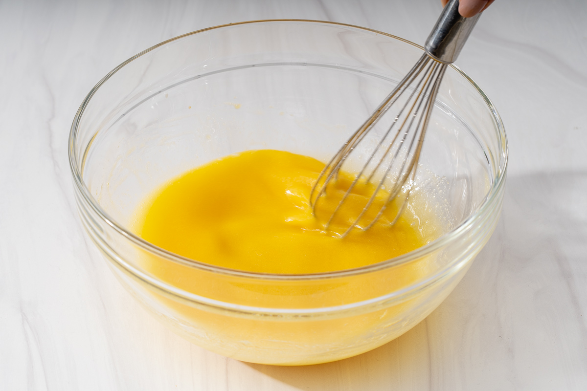
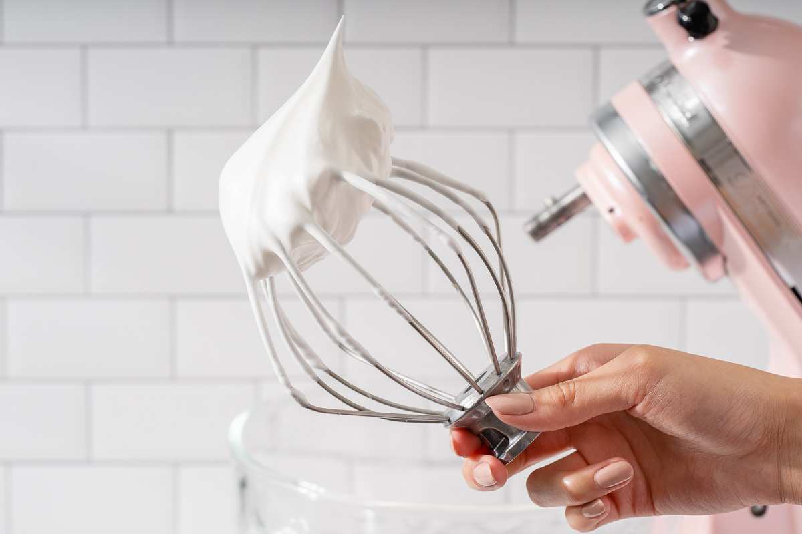
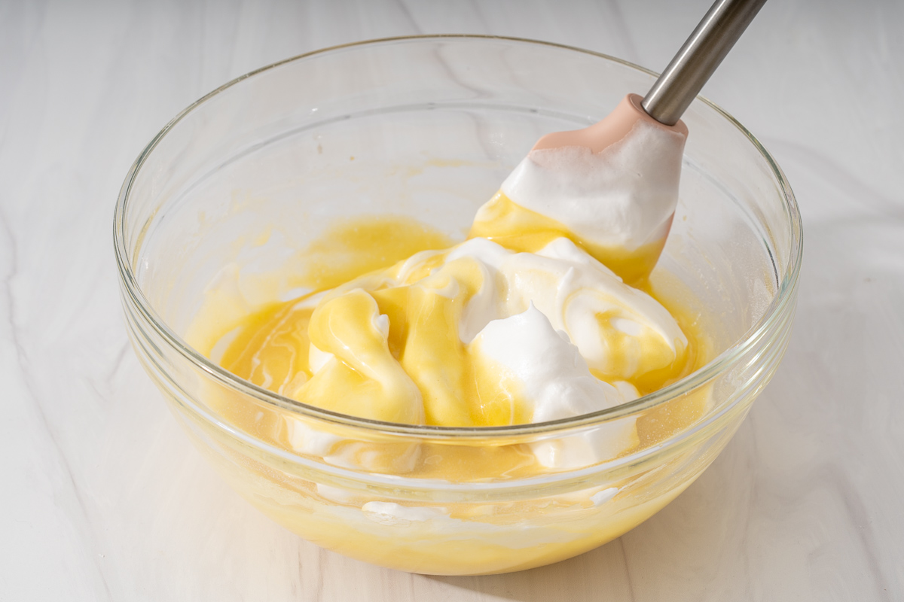
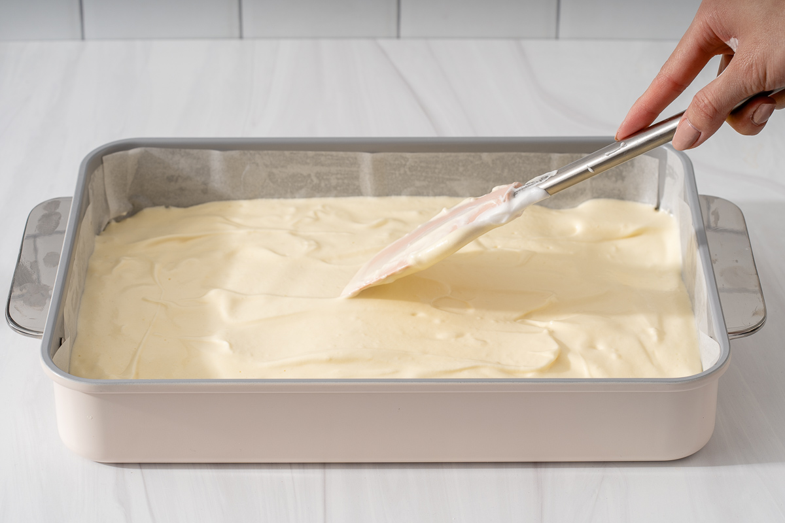
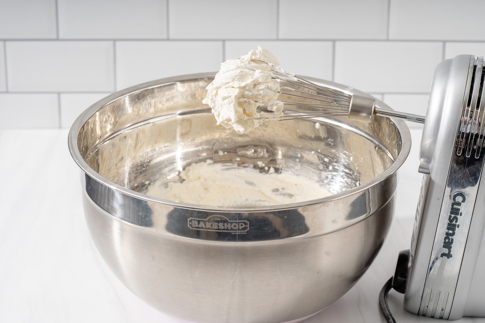
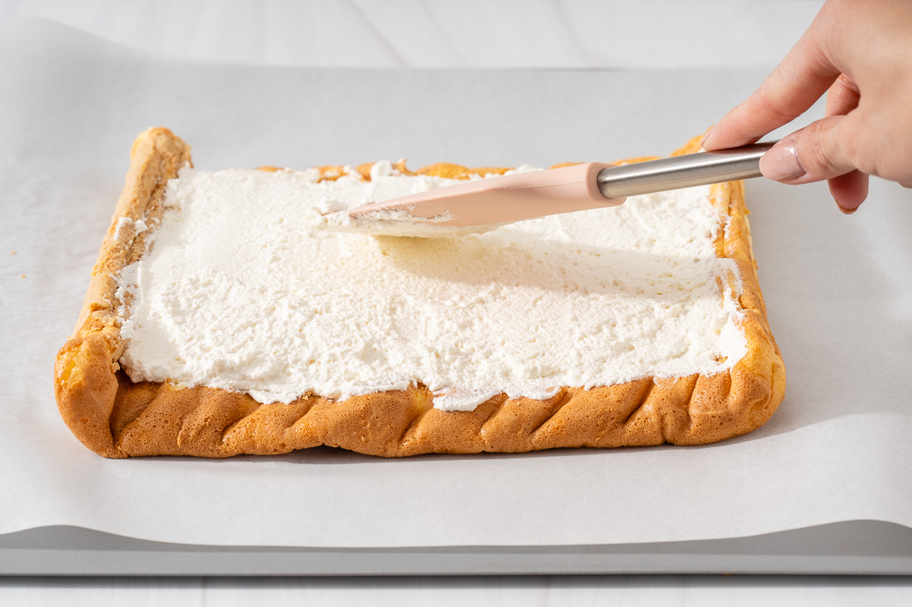

Homepage
Batter
Baking
Fillings
Mix the egg yolk mixture

In a medium mixing bowl, wipe the bowl with a paper towel and make sure there is no water in it.
Add the vegetable oil, milk, cake flour(use a fine-mesh sieve to sift it), and egg yolks you have prepared before into the bowl.
Following the right adding sequence can increase the success rate.
Mix with a whisk when adding each ingredient until combined.
Mix the egg white meringue

In a large mixing bowl, wipe the bowl with a paper towel and make sure there is no water in it.
Three steps to beat the egg whites
Add the egg whites and beat with an electric mixer on high until bubbly and frothy.
Pour ⅓ powdered sugar into the bowl.
Continue beating the egg whites until whites are opaque and the bubbles have tightened up.
Pour ⅔ powdered sugar into the bowl.
Continue beating the egg whites until stiff peaks form and the egg whites hold their pointed tip.
Combine the egg mixtures

Preheat the oven to 300 °F (150 °C) now to save time.
Using a rubber spatula, add about ⅓ of the egg white meringue into the egg yolk mixture and very gently fold until mostly mixed.
Add the combined egg mixture to the remaining egg white and gently fold.
Bake the batter

Line an 11 in (28 cm) x 11 in (28 cm) sheet pan with Teflon paper.
Pour the batter into the pan and even out the batter with a spatula.
Give the tray a few taps on your work surface to release any large air bubbles.
Bake at 300 °F (150 °C) for 25 minutes.
Remove the cake

When the time is up, take the pan out of the oven.
Take the cake with the Teflon paper out of the pan and put it on the work surface.
Peel off the Telfon paper and use a large kitchen paper to cover it.
Wait for 15 minutes to allow the cake to cool completely.
Use an electric mixer to whip the heavy cream and powdered sugar until medium to stiff peaks form.
Make the whipped cream and assemble

Spread the whipped cream evenly on top using a rubber spatula.
Gently roll the cake back up.
Tightly wrap the cake with plastic wrap and chill the cake in the refrigerator for 1 hour.
Then garnish, slice, and serve!